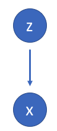
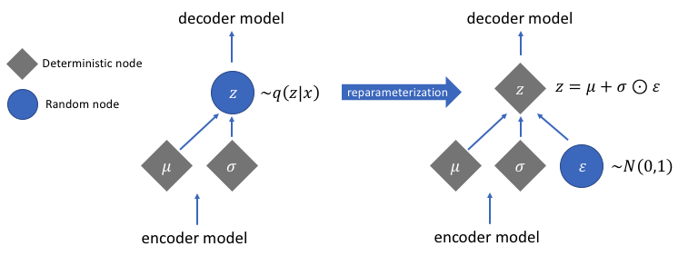
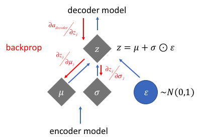
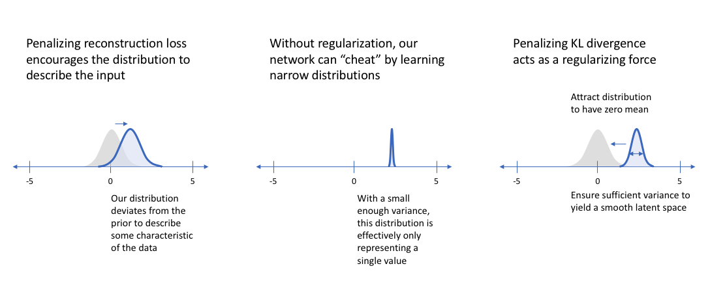
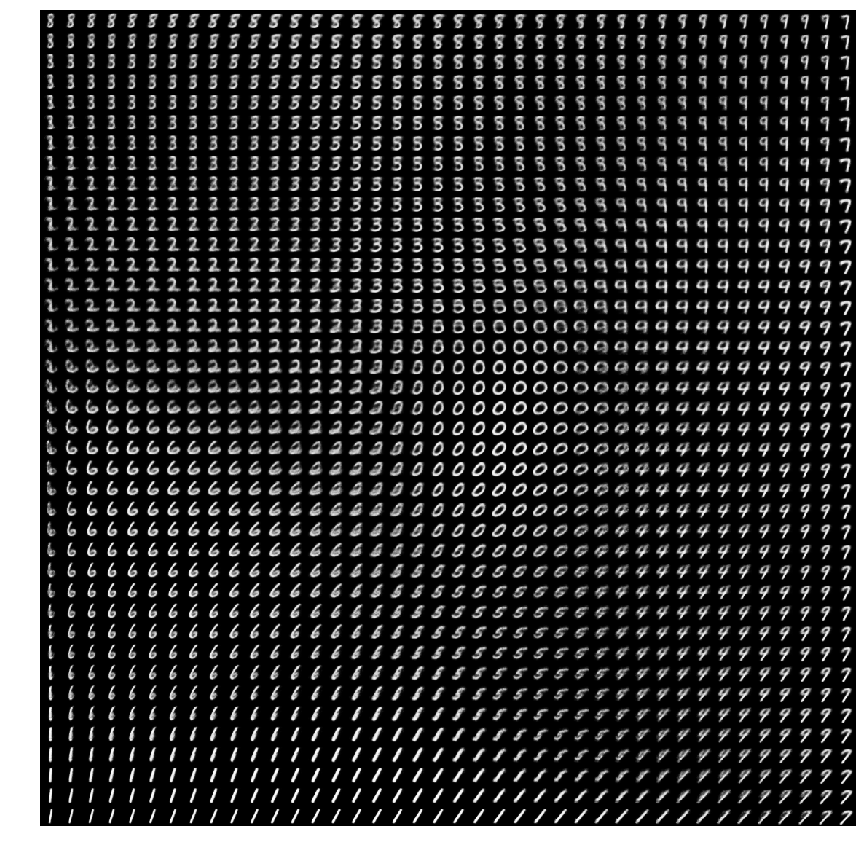

Chapter 2 Variational Autoencoder
A variational autoencoder (VAE) (Kingma and Welling 2013) provides a probabilistic manner for describing an observation in latent space. Thus, rather than building an encoder which outputs a single value to describe each latent state attribute, we’ll formulate our encoder to describe a probability distribution for each latent attribute.
2.1 Intuition
To provide an example, let’s suppose we’ve trained an autoencoder model on a large dataset of faces with a encoding dimension of 6. An ideal autoencoder will learn descriptive attributes of faces such as skin color, whether or not the person is wearing glasses, etc. in an attempt to describe an observation in some compressed representation.

In the example above, we’ve described the input image in terms of its latent attributes using a single value to describe each attribute. However, we may prefer to represent each latent attribute as a range of possible values. For instance, what single value would you assign for the smile attribute if you feed in a photo of the Mona Lisa? Using a variational autoencoder, we can describe latent attributes in probabilistic terms.

With this approach, we’ll now represent each latent attribute for a given input as a probability distribution. When decoding from the latent state, we’ll randomly sample from each latent state distribution to generate a vector as input for our decoder model.

By constructing our encoder model to output a range of possible values (a statistical distribution) from which we’ll randomly sample to feed into our decoder model, we’re essentially enforcing a continuous, smooth latent space representation. For any sampling of the latent distributions, we’re expecting our decoder model to be able to accurately reconstruct the input. Thus, values which are nearby to one another in latent space should correspond with very similar reconstructions.

2.2 Statisical motivation}
Suppose that there exists some hidden variable \(z\) which generates an observation \(x\).

We can only see \(x\), but we would like to infer the characteristics of \(z\). In other words, we’d like to compute \(p\left( {z|x} \right)\). \[ p\left( z|x \right) = \frac{p\left( {x|z} \right)p\left( z \right)}{p\left( x \right)} \] Unfortunately, computing \(p\left( x \right)\) is quite difficult. This usually turns out to be an intractable distribution. However, we can apply variational inference to estimate this value.
Let’s approximate \(p\left( {z|x} \right)\) by another distribution \(q\left( {z|x} \right)\) which we’ll define such that it has a tractable distribution. If we can define the parameters of \(q\left( {z|x} \right)\) such that it is very similar to \(p\left( {z|x} \right)\), we can use it to perform approximate inference of the intractable distribution.
Recall that the KL divergence is a measure of difference between two probability distributions. Thus, if we wanted to ensure that \(q\left( {z|x} \right)\) was similar to \(p\left( {z|x} \right)\), we could minimize the KL divergence between the two distributions. \[\min KL\left( {q\left( {z|x} \right)||p\left( {z|x} \right)} \right)\] We can minimize the above expression by maximizing the following: \[{E_{q\left( {z|x} \right)}}\log p\left( {x|z} \right) - KL\left( {q\left( {z|x} \right)||p\left( z \right)} \right) \] The first term represents the reconstruction likelihood and the second term ensures that our learned distribution \(q\) is similar to the true prior distribution \(p\).
We can further construct this model into a neural network architecture where the encoder model learns a mapping from \(x\) to \(z\) and the decoder model learns a mapping from \(z\) back to \(x\).

Our loss function for this network will consist of two terms, one which penalizes reconstruction error (which can be thought of maximizing the reconstruction likelihood as discussed earlier) and a second term which encourages our learned distribution \({q\left( {z|x} \right)}\) to be similar to the true prior distribution \({p\left( z \right)}\), which we’ll assume follows a unit Gaussian distribution, for each dimension \(j\) of the latent space. \[ {\cal L}\left( x,\hat x \right) + \sum\limits_j KL\left( q_j\left( z|x \right) || p\left( z \right) \right) \]
2.2.1 Implementation
Rather than directly outputting values for the latent state as we would in a standard autoencoder, the VAE will output parameters describing a distribution for each dimension in the latent space. Since we’re assuming that our prior follows a normal distribution, we’ll output two vectors describing the mean and variance of the latent state distributions. If we were to build a true multivariate Gaussian model, we’d need to define a covariance matrix describing how each of the dimensions are correlated. However, we’ll make a simplifying assumption that our covariance matrix only has nonzero values on the diagonal, allowing us to describe this information in a simple vector. Our decoder model will then generate a latent vector by sampling from these defined distributions and proceed to develop a reconstruction of the original input.

However, this sampling process requires some extra attention. When training the model, we need to be able to calculate the relationship of each parameter in the network with respect to the final output loss using a technique known as backpropagation. However, we simply cannot do this for a random sampling process. Fortunately, we can leverage a clever idea known as the “reparameterization trick” which suggests that we randomly sample \(\varepsilon\) from a unit Gaussian, and then shift the randomly sampled \(\varepsilon\) by the latent distribution’s mean \(\mu\) and scale it by the latent distribution’s variance \(\sigma\).

With this reparameterization, we can now optimize the parameters of the distribution while still maintaining the ability to randomly sample from that distribution.

2.3 Visualization of latent space
To understand the implications of a variational autoencoder model and how it differs from standard autoencoder architectures, it’s useful to examine the latent space. The main benefit of a variational autoencoder is that we’re capable of learning smooth latent state representations of the input data. For standard autoencoders, we simply need to learn an encoding which allows us to reproduce the input. As you can see in the left-most figure, focusing only on reconstruction loss does allow us to separate out the classes (in this case, MNIST digits) which should allow our decoder model the ability to reproduce the original handwritten digit, but there’s an uneven distribution of data within the latent space. In other words, there are areas in latent space which don’t represent any of our observed data.

On the flip side, if we only focus only on ensuring that the latent distribution is similar to the prior distribution (through our KL divergence loss term), we end up describing every observation using the same unit Gaussian, which we subsequently sample from to describe the latent dimensions visualized. This effectively treats every observation as having the same characteristics; in other words, we’ve failed to describe the original data.
However, when the two terms are optimized simultaneously, we’re encouraged to describe the latent state for an observation with distributions close to the prior but deviating when necessary to describe salient features of the input.

If we observe that the latent distributions appear to be very tight, we may decide to give higher weight to the KL divergence term with a parameter \(\beta>1\), encouraging the network to learn broader distributions. This simple insight has led to the growth of a new class of models - disentangled variational autoencoders. As it turns out, by placing a larger emphasis on the KL divergence term we’re also implicitly enforcing that the learned latent dimensions are uncorrelated (through our simplifying assumption of a diagonal covariance matrix).
\[{\cal L}\left( x,\hat{x} \right) + \beta \sum\limits_j KL\left( q_j\left( z|x \right) || N(0,1) \right)\]
2.4 Variational autoencoders as a generative model
By sampling from the latent space, we can use the decoder network to form a generative model capable of creating new data similar to what was observed during training. Specifically, we’ll sample from the prior distribution \({p\left( z \right)}\) which we assumed follows a unit Gaussian distribution.
The figure below visualizes the data generated by the decoder network of a variational autoencoder trained on the MNIST handwritten digits dataset. Here, we’ve sampled a grid of values from a two-dimensional Gaussian and displayed the output of our decoder network.

As you can see, the distinct digits each exist in different regions of the latent space and smoothly transform from one digit to another. This smooth transformation can be quite useful when you’d like to interpolate between two observations, such as this recent example where